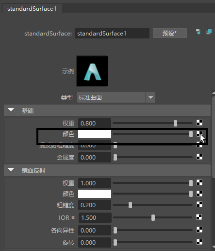
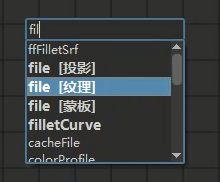
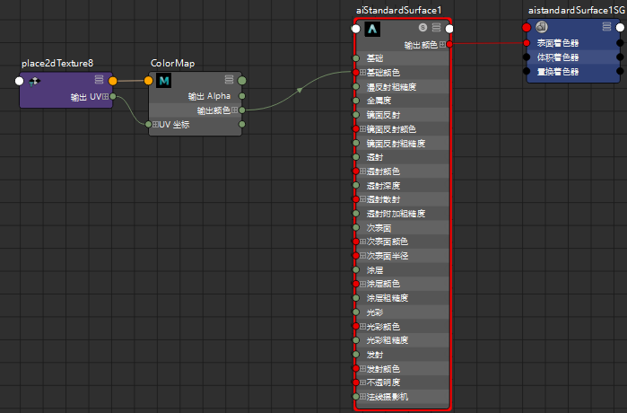
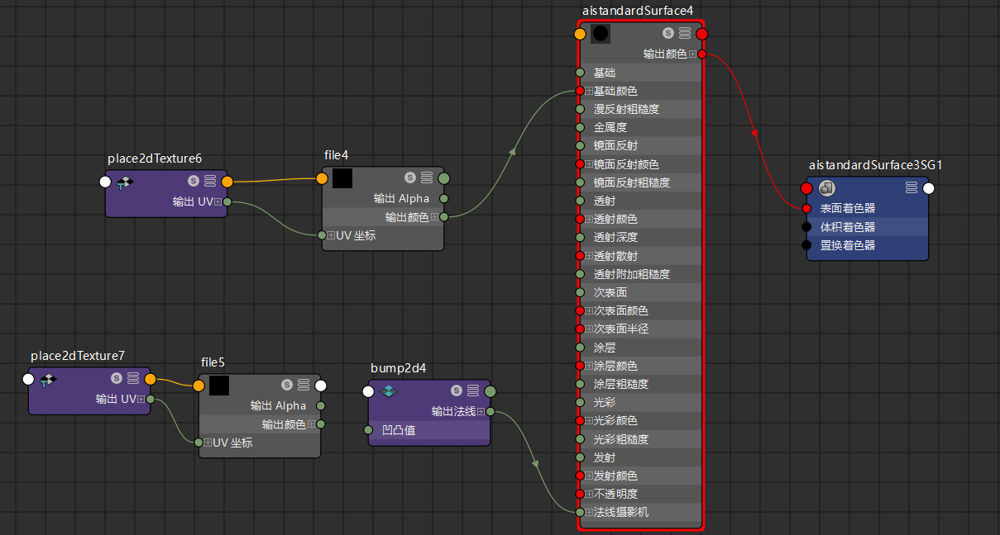

如果您是 Maya 新手，而且想要开始创建材质并将其指定给对象，请参见将颜色和着色应用于对象。
创建材质时，通常将纹理映射到材质的各种属性。常用纹理贴图包括：颜色贴图、透明度贴图、镜面反射贴图和凹凸贴图。
可以将 2D 或 3D 纹理映射到材质。纹理基于对象的 UV 纹理坐标映射到几何体。
以下示例演示了如何将文件纹理作为颜色贴图和凹凸贴图映射到材质。可以通过以下两种方式执行此操作：在材质的“属性编辑器”(Attribute Editor)或“特性编辑器”(Property Editor)中单击映射  按钮，或在 Hypershade 中连接节点以构建着色网络。
按钮，或在 Hypershade 中连接节点以构建着色网络。
使用“属性编辑器”(Attribute Editor)或“特性编辑器”(Property Editor)将纹理映射到材质
-
在 Hypershade 中选择材质。在材质“属性编辑器”(Attribute Editor)或“特性编辑器”(Property Editor)中，单击要将纹理连接到的属性旁边的
，例如“颜色”(Color)。将显示“创建渲染节点”(Create Render Node)窗口。
 - 从“创建渲染节点”(Create Render Node)窗口中选择“文件”(File)。
-
在“文件”(File)节点“属性编辑器”(Attribute Editor)中，通过单击“图像名称”(Image Name)属性旁边的浏览
 图标映射到图像文件。
注： 属性旁边的
图标映射到图像文件。
注： 属性旁边的 图标指示已映射到纹理。
图标指示已映射到纹理。
在此示例中，将“文件”(File)纹理映射到 aiStandardSurface 着色器的“基础 > 颜色”(Base > Color)属性，以将着色添加到模型的皮带，并将法线贴图添加到着色器的“几何体 > 凹凸贴图”(Geometry > Bump Mapping)属性以添加曲面细节。
本示例中使用的模型和材质由 Turbo Squid 美工人员 Michael Weisheim Woolfy 提供。
在 Hypershade 工作区中将纹理映射到材质
将颜色贴图添加到材质
-
按 Tab 键并输入节点类型；在本例中为“文件”(File)。对于所有 2D 纹理，纹理的映射方法在其名称旁边进行指示（例如，“文件 [蒙板]”(file [Stencil])）。
或者，可以将纹理从“创建”(Create)选项卡拖放到工作区中。
 -
在“文件”(File)节点“特性编辑器”(Property Editor)中，通过单击“图像名称”(Image Name)属性旁边的浏览
图标映射到图像文件。
注： 属性旁边的 图标指示已映射到纹理。
-
使用鼠标中键或鼠标左键拖动，在文件节点的“输出颜色”(Out Color)属性和材质的颜色属性之间创建连接线。

将凹凸贴图添加到材质
- 按 Tab 键并创建凹凸 2D 节点。
- 按 Tab 键并创建“文件”(File)节点，然后单击“图像名称”(Image Name)属性旁边的浏览 图标，将法线贴图映射到“文件”(File)纹理。
-
使用鼠标中键或鼠标左键拖动以在 file.outAlpha 和 bump2d.bumpValue 之间创建连接线，并创建从 bump2d.outNormal 到材质的“法线摄影机”(Normal Camera)属性的连接线。

本示例中使用的模型和材质由 Turbo Squid 美工人员 Michael Weisheim Woolfy 提供。
其他提示和技巧
创建纹理后，该纹理将在 Hypershade 浏览器的“纹理”(Textures)选项卡中可用，您可以将其拖放到工作区以将纹理贴图添加到图表。
可以按照相同准则连接其他类型的纹理贴图。此外，只能将 outColor 的 R、G 或 B 通道连接到材质的属性，而不能连接 file.outColor。
在此示例中，通过将文件纹理的 outColor 属性的 R 通道连接到材质的“金属度”(Metalness)属性，调整材质的金属度。
下面是添加一些纹理贴图后的最终着色器。
本示例中使用的模型和材质由 Turbo Squid 美工人员 Michael Weisheim Woolfy 提供。